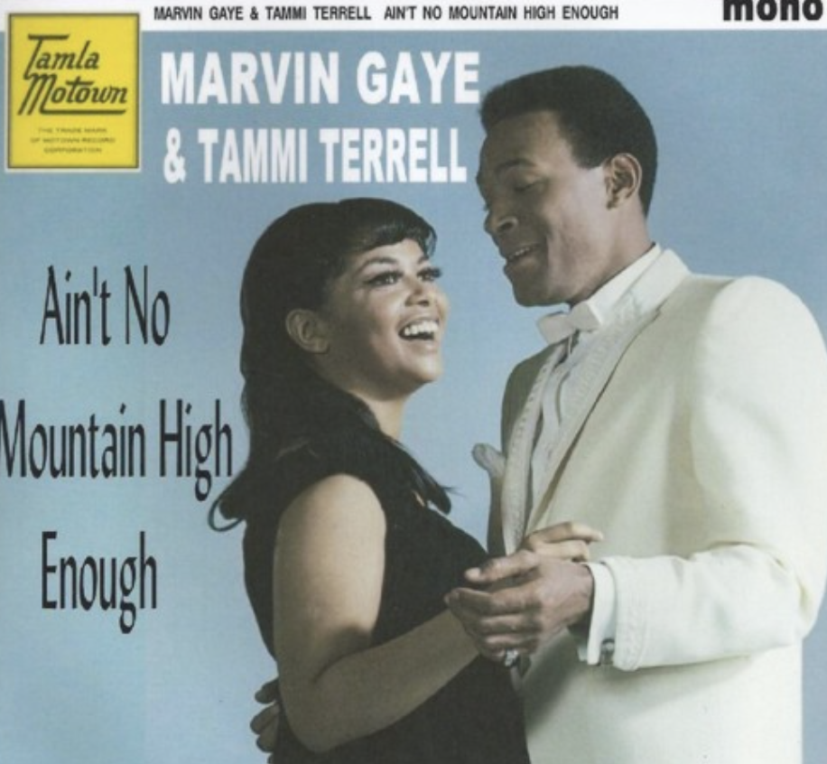

My fav song lyrics
Ain't No Mountain High Enough
Song by Marvin Gaye and Tammi Terrell
Video

… Listen baby, ain't no mountain high
Ain't no valley low, ain't no river wide enough, baby
If you need me call me, no matter where you are
No matter how far, don't worry, baby
Just call my name, I'll be there in a hurry
You don't have to worry
… 'Cause, baby, there ain't no mountain high enough
Ain't no valley low enough
Ain't no river wide enough
To keep me from getting to you, babe
… Remember the day I set you free
I told you you could always count on me, darling
From that day on, I made a vow
I'll be there when you want me
Some way, somehow
… 'Cause, baby, there ain't no mountain high enough
Ain't no valley low enough
Ain't no river wide enough
To keep me from getting to you, babe
… Oh no, darling
No wind, no rain
Or winter's cold can stop me, baby, na na, baby
'Cause you are my goal
If you're ever in trouble
I'll be there on the double
Just send for me, oh, baby, ha
… My love is alive (woo)
Way down in my heart
Although we are miles apart
If you ever need a helping hand
I'll be there on the double
Just as fast as I can
Don't you know that there
… Ain't no mountain high enough
Ain't no valley low enough
Ain't no river wide enough
To keep me from getting to you, babe
… Don'tcha know that there
Ain't no mountain high enough
Ain't no valley low enough
Ain't no river wide enough
Ain't no mountain high enough
Ain't no valley low enough